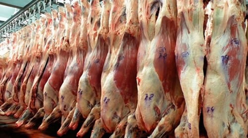

Real Chubut - Agencia de Noticias


Carne: fuertes pérdidas y mayores precios

…que la suspensión imprevista el lunes pasado de la reunión de la cadena de la carne que, entre otras, preside el propio presidente Mauricio Macri, aunque fue atribuida a "problemas de agenda" de último momento, parece que respondió a otros factores. Según los corrillos, la falta de respuesta oficial a la creciente cantidad de problemas que enfrenta la producción agropecuaria, que le iban a ser reclamados directamente al Presidente de la República ante la falta de respuesta de los funcionarios intermedios, determinó que el mandatario optara por una postergación "casi" sin fecha, ya que el encuentro pasó directamente a marzo, lo que respalda a quienes sostienen esta teoría. Y, aunque en el caso de la hacienda los valores vienen firmes (tal como adelantó ya hace un mes este diario), los significativos aumentos de costos por los precios del maíz, y las complicaciones y pérdidas que provocaron las muy malas condiciones climáticas hasta ahora, sumadas a subas de servicios, etc. justifican el malhumor de los ganaderos que ven cómo se le vuelven a diluir las esperadas ganancias. En el caso de las pérdidas, las inundaciones que se produjeron hasta ahora fueron, en general, en zonas típicas de cría con terneros muy chicos al pie de las madres, mientras que la posterior ola de calor de esta semana afectó por igual a todas las categorías, y en una región mucho más amplia. Y, si bien no termina de evaluarse aún la mortandad final producida, a medida que se conocen los números de cada caso, se puede prever la magnitud de las pérdidas, en cabezas, y en montos.
… que también se espera que por estas y otras causas los precios de la hacienda se mantendrán entre firmes y en alza para las próximas semanas. Según el titular de CICCRA, Miguel Schiariti, "las recrías van a ser más largas y a pasto por lo que, probablemente a partir de marzo van a faltar animales gordos que se engordaban a corral y que son los que están faltando hoy, no solo por las lluvias, sino también porque los feed lots repusieron menos", afirmó, tras dejar entrever que también en el seno de la "cadena" de la carne hay algunos cortocircuitos bastante difíciles de ocultar a esta altura. "Se ve que hay temas que no los van a resolver, como el asunto de los cueros que habían comprometido el año pasado y, que no solo no se arregló sino que los curtidores volvieron ahora a bajar los precios entre $2 y $3, y en algunos casos ya no retiran los cueros de toros y vacas de algunas empresas", explicó. Lamentablemente no es el único sector con problemas. De hecho, un comunicado de Coninagro, la entidad que nuclea a buena parte del sector cooperativo agroindustrial, da cuenta que "la fuerte crisis que afecta al sector vitivinícola amenaza con frustrar la cosecha de vid, recientemente iniciada en Mendoza". "Para un productor de uva tinta común, levantar la cosecha con asistencia crediticia pasa a representar el 28% de los costos de producción y, para uno de vino blanco, el 31% de los valores de producción", destaca la entidad que preside el mendocino Carlos Ianizzotto. El dirigente destacó, también, que "la percepción que hay en el ambiente productivo es de desaliento, ya que varias bodegas no recibirán uva y hay un porcentaje muy alto de productores sin destino. Dicho sector atraviesa desde hace meses un panorama complicado por la constante caída del consumo, produciendo así la existencia de un sobre stock vínico que amenaza con disminuir aún más los precios que ya bajaron con respecto de 2018."
…que, mientras las lluvias y la ola de calor y muerte amainaron parcialmente (los pronósticos hablan de temperaturas sobre el promedio, hasta abril), y se conoció la decisión de la Unión Europea de retomar las compras de biodiésel argentino para ese destino, se esperan inminentes definiciones del conflicto entre EE.UU. y China, que mantiene en vilo a los mercados agrícolas mundiales desde hace un mes, y que se agrava por la falta de información pública oficial estadounidense por el enfrentamiento de la Administración Trump con la oposición en el Congreso, lo que impide conocer la mayoría de los datos del principal referente mundial: Chicago. Mientras, se siguen conociendo datos locales. Por caso, la Bolsa de Bahía Blanca informó que "Las exportaciones de maíz alcanzaron U$S 4.196 millones en 2018 (+9,7%), mientras el Consejo Internacional de Granos proyecta una suba del consumo mundial mayor a la de la producción por lo que la relación stock/consumo pasaría de 28,5% a 23,9%". Bahía Blanca destaca, además, que "El avance de siembra es del 92,7% de las 5,8 millones de hectáreas proyectadas". A su vez, la entidad bonaerense explicó que se mantiene la firmeza en los precios del trigo. En su reporte quincenal señala que "Caería 5% la producción mundial y 3,9% los stocks finales, mientras que en Argentina, el incremento en la producción es menor que el de las exportaciones (3,2% vs 6,2%)". También confirma el crecimiento de 7,3% de la producción nacional de trigo, en 19 millones de toneladas y también crece el FOB argentino hasta u$s276 para enero", afirma la Bolsa de Bahía.
Fuente: Ambito